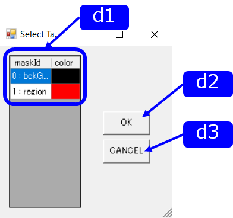
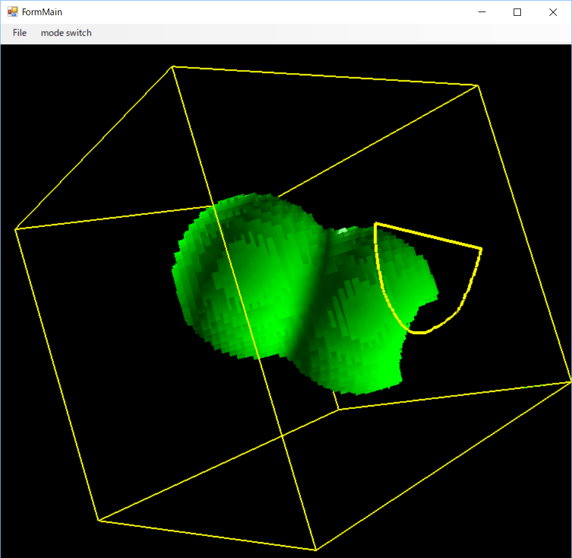
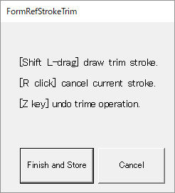

|  |
d1. Mask list トリムしたいマスクのIDを指定
d2. OK button 決定する d3. CANCEL button キャンセルする |
|  |
Shift key + L-drag トリムするマスク領域を指定
Ctrl key + Z key １つ前の状態に戻る R Click 取り消し |
|  |
Finish and Store トリムを完了する．
Cancel トリム結果を破棄してStroke Trimモードを終了する |